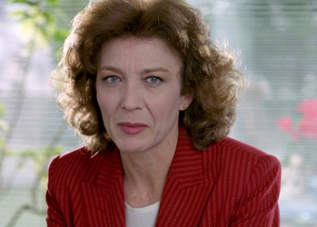
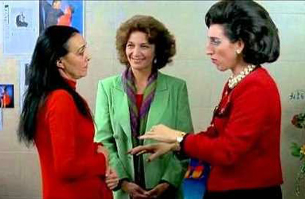
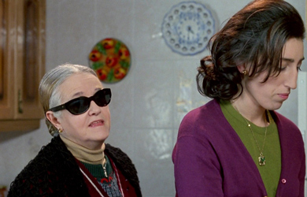
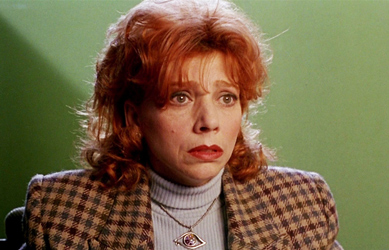
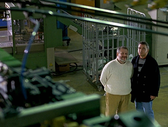
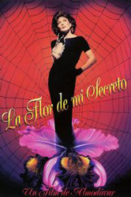
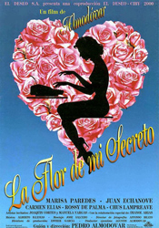
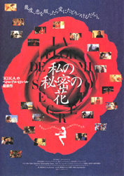

Marisa Paredes - Leo Macías
Rossy de Palma - Rosa


Chus Lampreave - Madre de Leo
Kiti Mánver - Manuela


Agustin Almodóvar - Newspaperman at El País
Leocadia ("Leo") Macías writes popular romance novels under a pen name, Amanda Gris. Unlike her romantic ("pink") novels, her love life is troubled. She has a difficult relationship with her husband Paco, a military officer stationed in Brussels and later in Bosnia, who is physically and emotionally distant. The film starts with Leo writing about the feeling of having lost her lover, a feeling that she compares to the pain of a tight pair of boots that she cannot take off. Almodovar took for this first part of the film strong plot elements from Dorothy Parker's short story, The Lovely Leave.
Leo begins to change the direction of her writing, wanting to focus more on darker themes such as pain and loss, and can no longer write her romantic Amanda Gris novels. However, her publishers demand sentimental happy endings, at least until her contract is up. She begins to re-evaluate her life through her relationship with her publishers, her husband, her best friend Betty, her "crab-faced" sister Rosa and her bickering elderly mother. Only her maid (played by flamenco dancer Manuela Vargas) appears steadfast. She also meets Ángel, a prominent newspaper editor who quickly falls for Leo and her writing.
After signing a contract with the newspaper, El País, Leo tells Ángel that she cannot write romances anymore, and that she has written a dark ("black") novel about a young mother whose daughter kills her husband because he tried to rape her. After that, the corpse of the dead man is hidden in a refrigerator. Although Leo throws this story out, she later learns that someone is turning it into a movie. (In fact, Almodóvar himself created a movie based on this same plot, Volver, released eleven years later in 2006).
After the inevitable disintegration of her marriage and then learning that her best friend was her husband's lover, Leo takes and survives an overdose, then goes with her mother to the village of Almagro to rest and recover. There she receives a call from her publishers, who are apparently delighted by the two manuscripts they have received from her - romances Leo never wrote or submitted. She returns to Madrid and learns that Ángel is her ghostwriter. More surprises unfold when she attends a brilliant dance performance featuring her maid, Manuela Vargas, and Joaquín Cortés, who plays the maid's son, Antonio. Antonio soon confesses that he is the one who took her manuscript now being made into a movie. A final surprise for Leo: after a false start, she finds love with the smitten Ángel, and the film ends with the tenuous promise of a "new year".



Gil Evans - Performed by Miles Davis